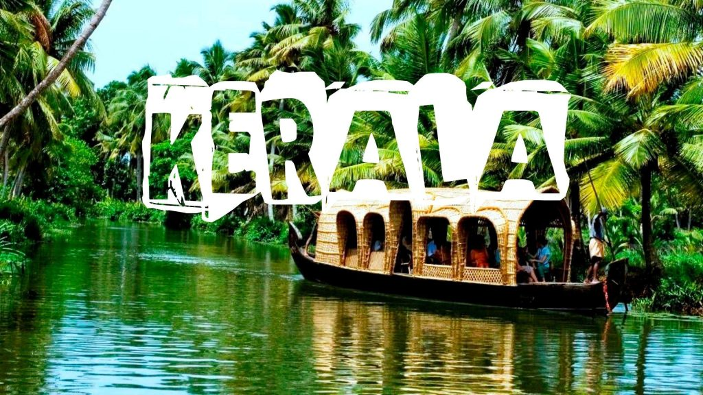

Kerala
Explore Kerala: God's Own Country
Kerala, a tropical paradise in South India, is known for its serene backwaters, lush greenery, exotic wildlife, pristine beaches, and rich cultural heritage. Whether you're seeking relaxation, adventure, or cultural immersion, Kerala has something for everyone.
Package Highlights
Duration: 6 Days / 5 Nights
Destinations Covered: Kochi, Munnar, Thekkady, Alleppey, Kovalam
Best Time to Visit: September to March
Itinerary Overview
Day 1: Arrival in Kochi (Cochin)
Explore Fort Kochi and its colonial architecture.
Visit the Chinese Fishing Nets and St. Francis Church.
Enjoy a Kathakali dance performance in the evening.
Overnight Stay: Kochi
Day 2: Kochi to Munnar (4-hour drive)
Scenic drive through tea plantations and waterfalls.
Visit the Eravikulam National Park (home to the endangered Nilgiri Tahr).
Explore tea museums and spice gardens.
Overnight Stay: Munnar
Day 3: Munnar to Thekkady (3-hour drive)
Take a boat safari on Periyar Lake to spot wildlife.
Visit spice plantations and learn about Kerala's spices.
Optional: Ayurvedic massage and wellness therapy.
Overnight Stay: Thekkady
Day 4: Thekkady to Alleppey (4-hour drive)
Check into a traditional houseboat for a backwater cruise.
Enjoy Kerala cuisine served on the houseboat.
Witness the serene beauty of the backwaters and village life.
Overnight Stay: Houseboat in Alleppey
Day 5: Alleppey to Kovalam (5-hour drive)
Relax on the pristine beaches of Kovalam.
Visit the iconic Lighthouse Beach and Hawah Beach.
Enjoy water sports or a sunset stroll.
Overnight Stay: Kovalam
Day 6: Departure from Trivandrum
Visit Padmanabhaswamy Temple (optional).
Transfer to Trivandrum Airport for departure.
Package Inclusions
Accommodation in 3-star or 4-star hotels (as per preference).
Daily breakfast and dinner.
All transfers and sightseeing in a private AC vehicle.
Houseboat stay with meals in Alleppey.
Entry fees to monuments and attractions.
Guided tours and assistance.
Package Exclusions
Airfare/train tickets.
Personal expenses and tips.
Any additional activities not mentioned in the itinerary.